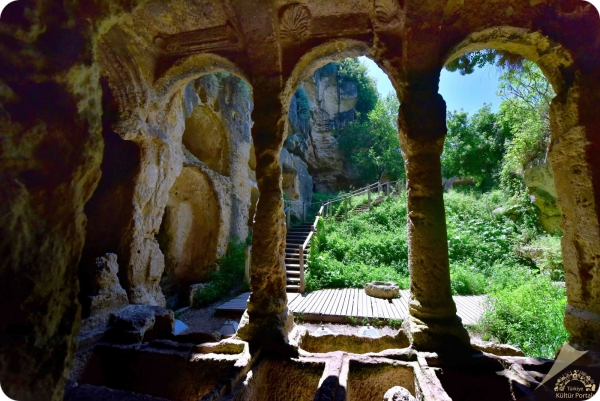

Hatay'ın Samandağ İlçesi Çevlik Örenyeri yakınında bulunan tünel İ.Ö.1’nci yüzyılda yapılmıştır. Dağlardan inerek yaşamı tehdit eden sel ve taşkınlardan korunmak amacıyla Roma İmparatoru Vespasian şehrin etrafını dolanacak, böylece akıntıların yönünü değiştirecek bir tünelin yapımını emretmiştir. İnşaat İ.S.69 yılında başlamış, İ.S.81 yılında halefi ve oğlu Titus tarafından bitirilmiştir.
Tünel inşasında Roma lejyonları ve köleler çalışmıştır. Tümüyle dağ içine oyulan tünel bin 380 metre uzunluğunda, 7 metre yüksekliğinde ve 6 metre genişliğindedir. Tünelin deniz tarafındaki girişine göre sağ tarafta 100 metre kadar uzaklıkta bulunan Beşikli Mağara, kaya mezarlarının en geniş ve en ünlülerinden olup, içerisinde bölümler halinde on iki mezar vardır. Mezarlar birbirlerinden duvarlar ile ayrılmıştır. Bu taş mezarlar, taş sütunlar ve kemerlerin birbirine bağladığı bölümler halinde olup, yukarıdan aşağıya yine taş merdivenlerle inilmektedir. Kayaların oyulması ile meydana getirilen, yer yer kapıların açıldığı bölümlerdeki sütunlar, sütun başlıkları, kademeler ve üst örtüyü kısmen süsleyen motifler orijinallerine uygun biçimde yapılmıştır.
Tünel inşasında Roma lejyonları ve köleler çalışmıştır. Tümüyle dağ içine oyulan tünel bin 380 metre uzunluğunda, 7 metre yüksekliğinde ve 6 metre genişliğindedir. Tünelin deniz tarafındaki girişine göre sağ tarafta 100 metre kadar uzaklıkta bulunan Beşikli Mağara, kaya mezarlarının en geniş ve en ünlülerinden olup, içerisinde bölümler halinde on iki mezar vardır. Mezarlar birbirlerinden duvarlar ile ayrılmıştır. Bu taş mezarlar, taş sütunlar ve kemerlerin birbirine bağladığı bölümler halinde olup, yukarıdan aşağıya yine taş merdivenlerle inilmektedir. Kayaların oyulması ile meydana getirilen, yer yer kapıların açıldığı bölümlerdeki sütunlar, sütun başlıkları, kademeler ve üst örtüyü kısmen süsleyen motifler orijinallerine uygun biçimde yapılmıştır.